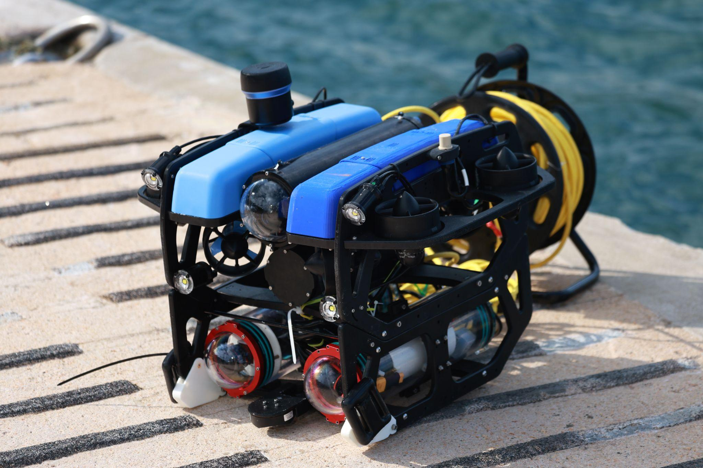
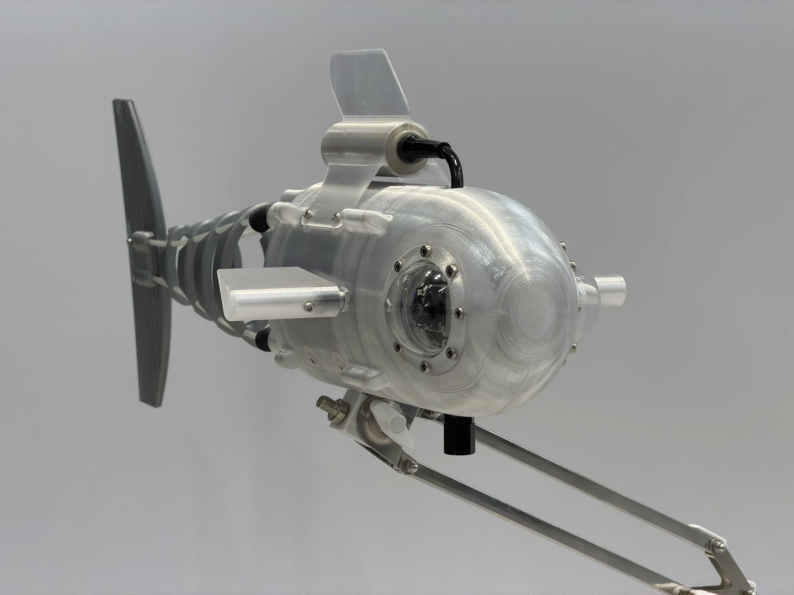
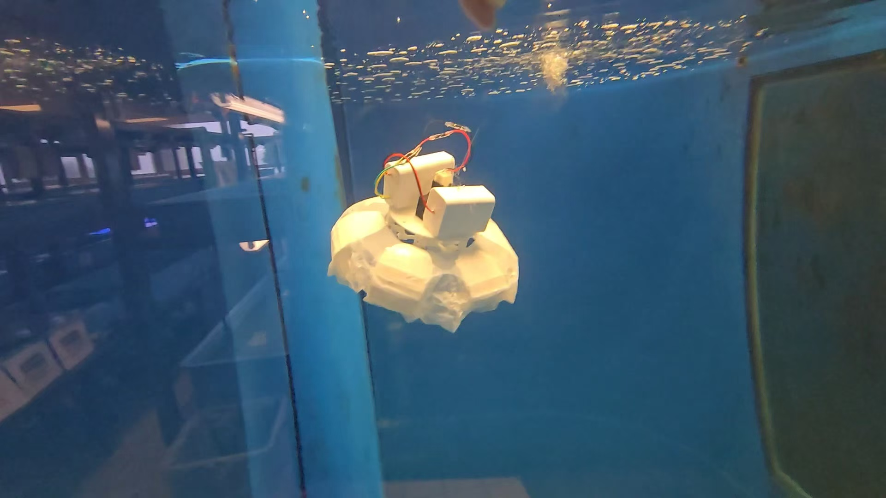
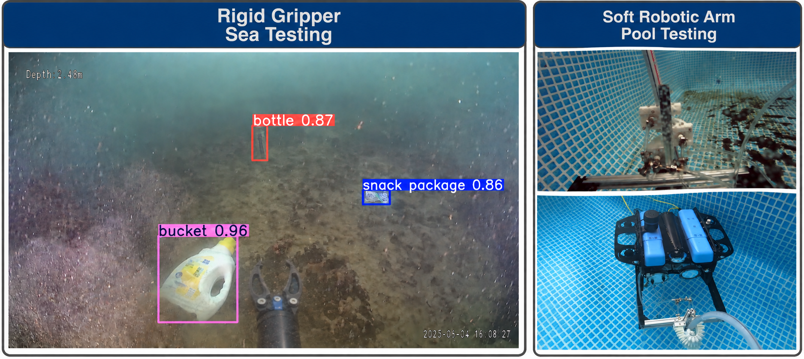
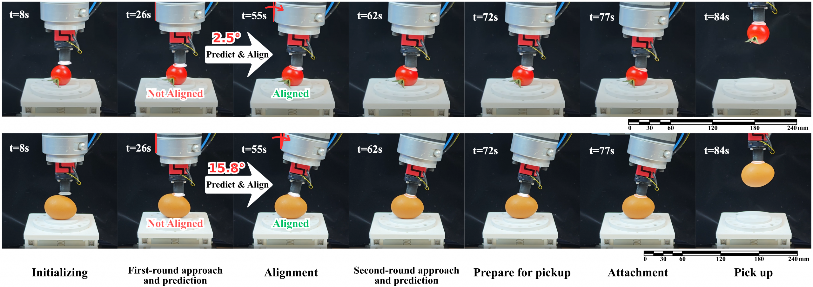

FUNCTION
Provides acoustic position measurements for underwater localization, where satellite GPS signals cannot be received directly.
RESEARCH PROGRAM 02
Take intelligent exploration into the water.
Develop novel sensing devices, robotic platforms and embodied intelligence for marine exploration, navigation and physical interaction.
SUB-DIRECTION 01
We develop sensing devices and robotic platforms for marine exploration. Handheld systems, remotely operated vehicles and surface robots bring cameras, sensors and computing into the water, connecting field deployment with embodied intelligence.
What we study
Portable and robot-mounted sensing for underwater observations.
Sensors, computing, communication and control in deployable systems.
Practical deployment, live data streaming and operator interfaces.
01 / Integrated sensing
Hover, focus or tap a component to explore its function.

Visual, acoustic and inertial observations come together on a shared robotic platform.
FUNCTION
Provides acoustic position measurements for underwater localization, where satellite GPS signals cannot be received directly.
FUNCTION
Scans the surroundings with acoustic range measurements, supporting obstacle awareness and navigation when visibility is poor.
FUNCTION
Measures water pressure to estimate depth, providing a vertical-position observation for localization and depth control.
FUNCTION
Measures velocity relative to the seabed when bottom lock is available. These measurements help constrain drift in underwater navigation.
FUNCTION
Protects the camera, inertial sensing and onboard electronics from water, allowing the sensing payload to operate underwater.
FUNCTION
Captures underwater imagery for visual tracking, scene observations and SLAM.
FUNCTION
Processes sensor streams onboard and runs perception and localization algorithms close to the sensing hardware.
FUNCTION
Measures acceleration and angular velocity to track short-term motion and complement camera and other sensor observations.
02 / Our robotic platforms
Sai-Kit Yeung’s team
Explore six surface and underwater platforms from our team.
FUNCTION
Integrates camera, IMU, DVL, depth, sonar and acoustic positioning observations for underwater perception and localization. The platform supports sensor-fusion SLAM and marine survey experiments.
FUNCTION
A solar-powered surface vehicle equipped with 5G connectivity. It can serve as a surface communication station for underwater robots, relaying data between the robots and remote operators through the 5G network.
FUNCTION
Pairs an ROV with a soft gripper to study underwater grasping and physical interaction. The soft gripper enables hydraulically actuated underwater grasping and gentler interaction with underwater ecosystems.
FUNCTION
A self-developed AUV with powerful onboard computing for real-time underwater embodied intelligence. It serves as a research platform for connecting onboard perception, decision-making and robot control during underwater operation.
FUNCTION
A self-developed compact ROV designed for lightweight underwater missions. Its handheld-scale form prioritizes portability and convenient handling for small-scale field tasks and experiments.
FUNCTION
A mission-oriented AUV developed for participation in the SAUV competition. Its development focuses on integrating the hardware, control and mission-execution capabilities needed for competition tasks.
Hover, focus or tap a platform to explore its role.
SUB-DIRECTION 03
Inspired by marine organisms, soft and miniature robots offer new ways to move and interact underwater. We investigate bio-inspired structures, propulsion and actuation for low-disturbance exploration and delicate tasks.
What we study
Fish-like and jellyfish-inspired motion for underwater exploration.
Compliant bodies and compact platforms for confined environments.
Robotic mechanisms that connect perception with controlled movement.
Representative systems & research

Rob Scharff’s team
Fish-inspired robots combine an actively driven tail with passive compliance to improve swimming speed and efficiency. Open designs make the platform reproducible and adaptable, while ongoing work explores soft robotic fish for low-disturbance seafloor surveying.
Representative work ↗
Wenqi Hu’s team
Jellyfish-inspired robots combine soft actuation with controlled water flows for propulsion and object manipulation. Representative electrohydraulic platforms demonstrate quiet swimming, contactless object transport and gentle handling, providing a basis for underwater cleanup research.
Representative work ↗SUB-DIRECTION 04
Physical interaction brings new challenges in perception, control and mechanism design. We study underwater grasping, gentle manipulation and trash collection, linking robot-mounted tools with the sensing needed to locate and approach a target.
What we study
Estimate target position to support approach and grasp planning.
Integrate manipulators and grippers with mobile robotic platforms.
Explore soft mechanisms for delicate objects and marine environments.
Representative systems & research

Sai-Kit Yeung’s team
Part of HKUST’s Sustainable Smart Campus as a Living Lab, the Sustainable Smart Marine Grid (SSMG) project develops solar-powered surface stations and underwater robots for surveying, live observation and trash collection. Debris detection and rigid and soft gripper testing support the development of robotic monitoring and cleanup at the HKUST waterfront.
Explore project ↗
Rob Scharff’s and Wenqi Hu’s teams
Joint research develops a miniature vision-based suction cup that senses contact force and orientation. A model shared across devices enables closed-loop alignment without individual calibration. Tabletop demonstrations with a tomato and an egg show gentle handling of delicate, curved objects, advancing tactile sensing for soft robotic manipulation.
Read paper ↗Program 01 studies what marine observations reveal about the environment. Program 02 develops the devices and robots that collect those observations, and how they navigate and interact underwater.
Marine robots offer tools for monitoring, inspection and physical intervention. Conservation applications connect these capabilities with ecological needs and field evaluation.